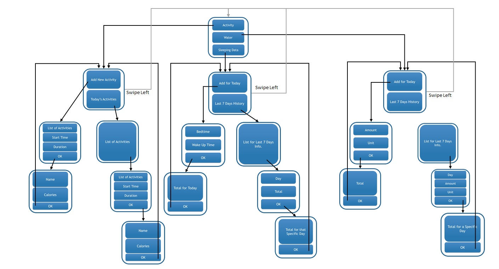
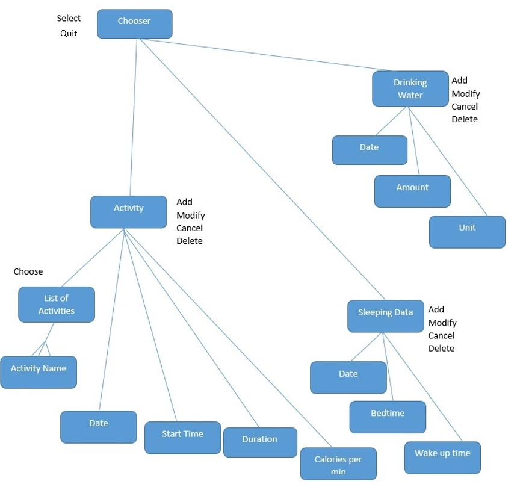

Project 3: Develop an app for a new device
Ethnology study
Prototype

Focus Group
Our Focus Group liked look and simiplicity of the prototype. They mentioned it is very good that it is so simple and does not need any experience to work with. Being practical and being easy to track was another thing that they came up with.
Some of them came up with idea of adding something related to daily diet will make it more useful; however, some others was against it because of the small screen of watch. Furtheremore, one of them had the idea that some other different drinks can be added such as milk, juice, and coffee.
One of them said that it would be better if we have something like a alert to show them that they did not drink enough water, they slept less than normal, and they had minimum activity for today.
One of our focus group said it would be better if we have different color of each part so it would be easier to navigate through different parts.
Ideas for the app
- User can choose from a list of activities, which kind of activity or exercise he/she has and the duration of that exercise. (Therefore approximate burning calories will be calculated)
- User can add goals for daily exercise, daily calorie usage, in addition to the goal weight.
- User can say how much water has used in the day.
- User can modify how much water in the past 7 days.
- User can see his/her activity log for today or/and for the past 7 days.
- User can see amount of water that has used so far for today
- Overall User can add/modify/delete sleeping data, amount of water being used, and activities being done for today and for the last 7 days.
Content and Control Model

Usage Scenarios
- Open the application.
- Scenario: Choose Sleeping section.
- Scenario 1: select last 7 days, select a date, enter sleeping hour info, see a preview, and choose OK button to go back to sleeping data.
- Scenario 2: select a date, enter sleeping hour info, and swipe right.
- Scenario 3: views.
- Scenario 4: swipe right to choose another section.
- Scenario : Choose Water section.
- Scenario 1: selects a date, enters drinking water amount info, and clicks add button.
- Scenario 2: selects a date, enters drinking water amount info, and swipe right.
- Scenario 3: views.
- Scenario 4: swipes right to choose another section.
- Scenario: Choose Activities section.
- Scenario 1: adds a new activity, names the activity, adds amount of calories per hour, hit Add button.
- Scenario 2: adds a new activity, names the activity, adds amount of calories per hour, swipe right.
- Scenario 3: Chooses created activity, adds the minutes of activity, hits Add button.
- Scenario 4: Chooses created activity, adds the minutes of activity, swipes right.
- Scenario 5: Views/Edits today activities.
- Scenario 6: swipes right to choose another section.
- Quit the application.